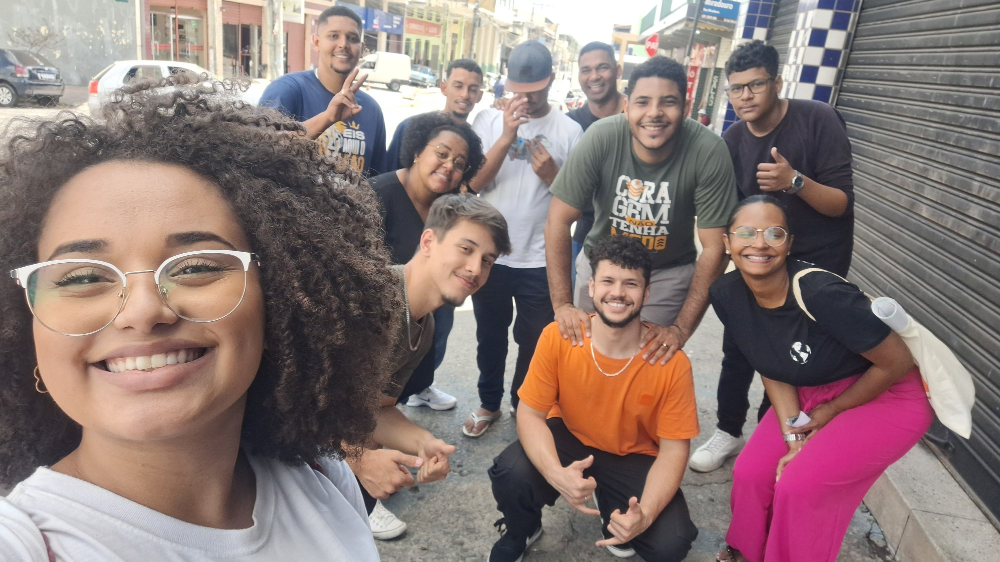

Adoração
Levar jovens a uma adoração verdadeira e transformadora na presença de Deus.
Vocal Renascer • Abril a Novembro 2025
"Assim que, se alguém está em Cristo, nova criatura é;
as coisas velhas já passaram; eis que tudo se fez novo."
— 2 Coríntios 5:17
Somos jovens unidos servindo um Deus vivo, levando o amor de Cristo às ruas, fortalecendo a comunhão e crescendo juntos na presença de Deus.
Levar jovens a uma adoração verdadeira e transformadora na presença de Deus.
Fortalecer vínculos entre jovens que servem juntos e crescem na fé.
Alcançar jovens afastados, visitantes e moradores da região com o evangelho.
Análise dos últimos 90 dias do perfil no Instagram
Alcance alto, crescimento baixo.
Precisamos converter visualização em seguidor e seguidor em presença.

Sem planejamento, cada post é decidido na hora. Com planejamento, construímos uma jornada espiritual documentada até novembro.
Postar com regularidade crescente até o congresso.
Cada post conectado ao anterior, caminhando para novembro.
Transformar alcance em presença real no congresso.